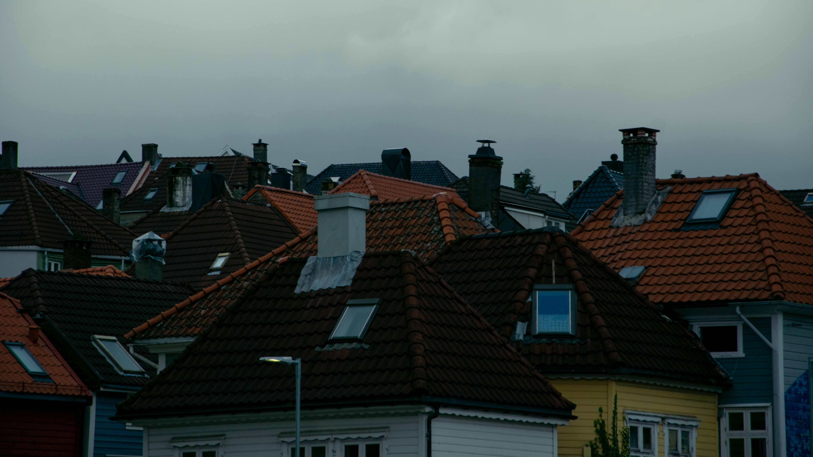
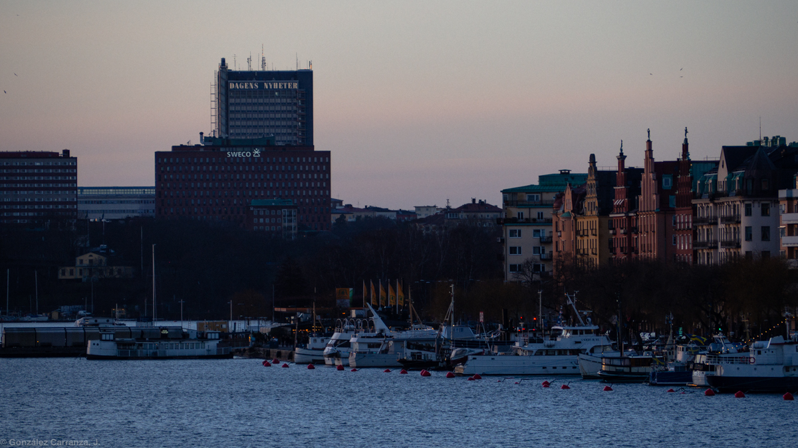
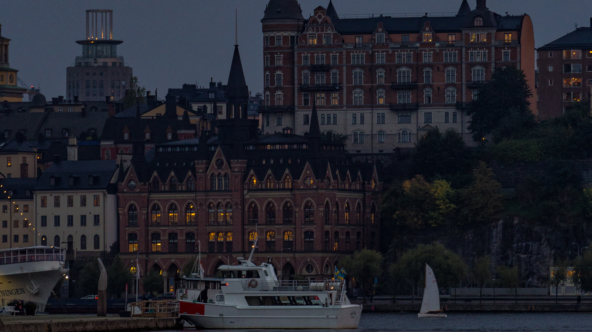
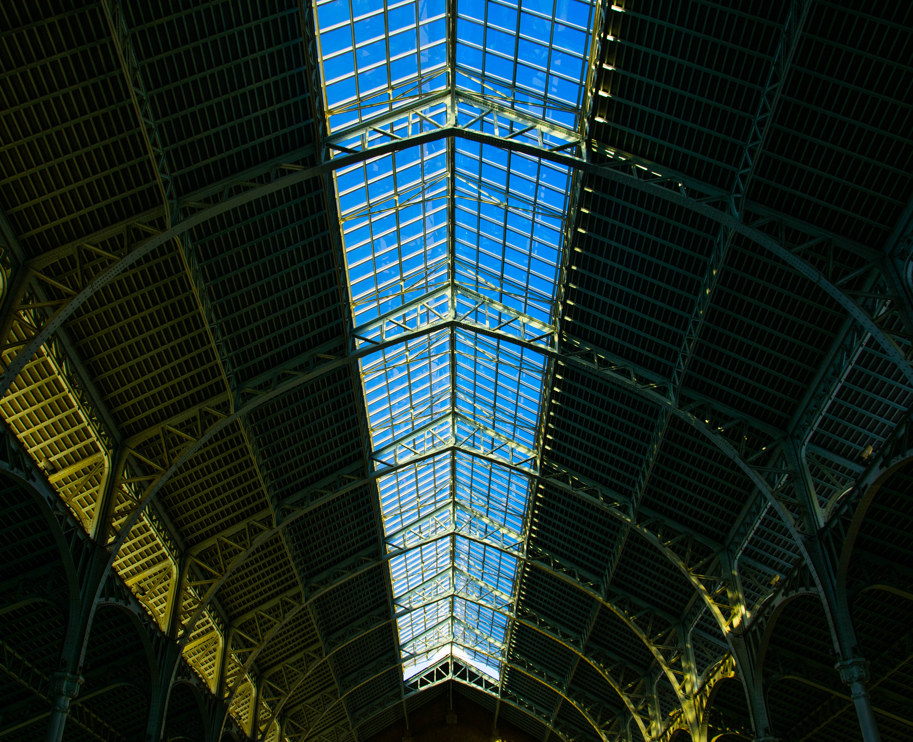
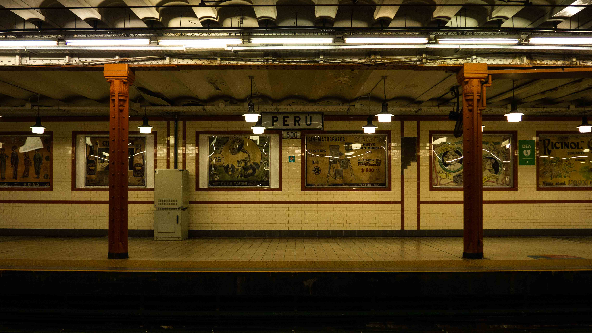

El mundo y la ciudad
Recuerdos y fotografías de algunos viajes por el planeta Tierra en el siglo XXI.
Ver todo





Urbes Mundi
Ciudades del mundo
Recuerdos y fotografías de algunos viajes por el planeta Tierra en el siglo XXI.
Ver todo




